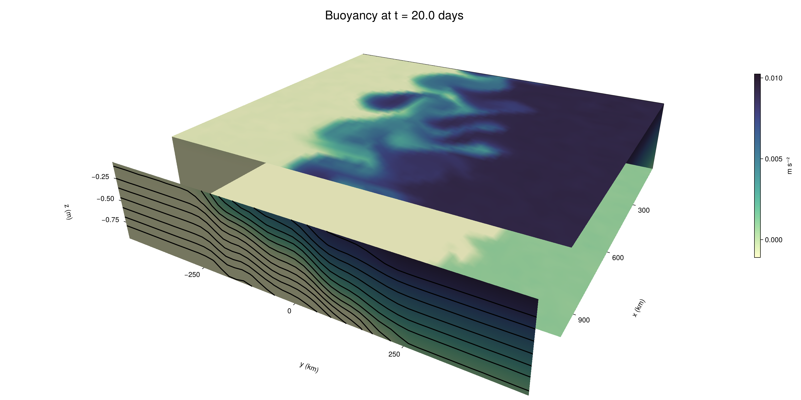

Baroclinic adjustment
In this example, we simulate the evolution and equilibration of a baroclinically unstable front.
Install dependencies
First let's make sure we have all required packages installed.
using Pkg
pkg"add Oceananigans, CairoMakie"using Oceananigans
using Oceananigans.UnitsGrid
We use a three-dimensional channel that is periodic in the x direction:
Lx = 1000kilometers # east-west extent [m]
Ly = 1000kilometers # north-south extent [m]
Lz = 1kilometers # depth [m]
grid = RectilinearGrid(size = (48, 48, 8),
x = (0, Lx),
y = (-Ly/2, Ly/2),
z = (-Lz, 0),
topology = (Periodic, Bounded, Bounded))48×48×8 RectilinearGrid{Float64, Periodic, Bounded, Bounded} on CPU with 3×3×3 halo
├── Periodic x ∈ [0.0, 1.0e6) regularly spaced with Δx=20833.3
├── Bounded y ∈ [-500000.0, 500000.0] regularly spaced with Δy=20833.3
└── Bounded z ∈ [-1000.0, 0.0] regularly spaced with Δz=125.0Model
We built a HydrostaticFreeSurfaceModel with an ImplicitFreeSurface solver. Regarding Coriolis, we use a beta-plane centered at 45° South.
model = HydrostaticFreeSurfaceModel(; grid,
coriolis = BetaPlane(latitude = -45),
buoyancy = BuoyancyTracer(),
tracers = :b,
momentum_advection = WENO(),
tracer_advection = WENO())HydrostaticFreeSurfaceModel{CPU, RectilinearGrid}(time = 0 seconds, iteration = 0)
├── grid: 48×48×8 RectilinearGrid{Float64, Periodic, Bounded, Bounded} on CPU with 3×3×3 halo
├── timestepper: QuasiAdamsBashforth2TimeStepper
├── tracers: b
├── closure: Nothing
├── buoyancy: BuoyancyTracer with ĝ = NegativeZDirection()
├── free surface: ImplicitFreeSurface with gravitational acceleration 9.80665 m s⁻²
│ └── solver: FFTImplicitFreeSurfaceSolver
├── advection scheme:
│ ├── momentum: WENO reconstruction order 5
│ └── b: WENO reconstruction order 5
└── coriolis: BetaPlane{Float64}We start our simulation from rest with a baroclinically unstable buoyancy distribution. We use ramp(y, Δy), defined below, to specify a front with width Δy and horizontal buoyancy gradient M². We impose the front on top of a vertical buoyancy gradient N² and a bit of noise.
"""
ramp(y, Δy)
Linear ramp from 0 to 1 between -Δy/2 and +Δy/2.
For example:
```
y < -Δy/2 => ramp = 0
-Δy/2 < y < -Δy/2 => ramp = y / Δy
y > Δy/2 => ramp = 1
```
"""
ramp(y, Δy) = min(max(0, y/Δy + 1/2), 1)
N² = 1e-5 # [s⁻²] buoyancy frequency / stratification
M² = 1e-7 # [s⁻²] horizontal buoyancy gradient
Δy = 100kilometers # width of the region of the front
Δb = Δy * M² # buoyancy jump associated with the front
ϵb = 1e-2 * Δb # noise amplitude
bᵢ(x, y, z) = N² * z + Δb * ramp(y, Δy) + ϵb * randn()
set!(model, b=bᵢ)Let's visualize the initial buoyancy distribution.
using CairoMakie
# Build coordinates with units of kilometers
x, y, z = 1e-3 .* nodes(grid, (Center(), Center(), Center()))
b = model.tracers.b
fig, ax, hm = heatmap(y, z, interior(b)[1, :, :],
colormap=:deep,
axis = (xlabel = "y [km]",
ylabel = "z [km]",
title = "b(x=0, y, z, t=0)",
titlesize = 24))
Colorbar(fig[1, 2], hm, label = "[m s⁻²]")
fig
Simulation
Now let's build a Simulation.
simulation = Simulation(model, Δt=20minutes, stop_time=20days)Simulation of HydrostaticFreeSurfaceModel{CPU, RectilinearGrid}(time = 0 seconds, iteration = 0)
├── Next time step: 20 minutes
├── Elapsed wall time: 0 seconds
├── Wall time per iteration: NaN days
├── Stop time: 20 days
├── Stop iteration : Inf
├── Wall time limit: Inf
├── Callbacks: OrderedDict with 4 entries:
│ ├── stop_time_exceeded => Callback of stop_time_exceeded on IterationInterval(1)
│ ├── stop_iteration_exceeded => Callback of stop_iteration_exceeded on IterationInterval(1)
│ ├── wall_time_limit_exceeded => Callback of wall_time_limit_exceeded on IterationInterval(1)
│ └── nan_checker => Callback of NaNChecker for u on IterationInterval(100)
├── Output writers: OrderedDict with no entries
└── Diagnostics: OrderedDict with no entriesWe add a TimeStepWizard callback to adapt the simulation's time-step,
conjure_time_step_wizard!(simulation, IterationInterval(20), cfl=0.2, max_Δt=20minutes)Also, we add a callback to print a message about how the simulation is going,
using Printf
wall_clock = Ref(time_ns())
function print_progress(sim)
u, v, w = model.velocities
progress = 100 * (time(sim) / sim.stop_time)
elapsed = (time_ns() - wall_clock[]) / 1e9
@printf("[%05.2f%%] i: %d, t: %s, wall time: %s, max(u): (%6.3e, %6.3e, %6.3e) m/s, next Δt: %s\n",
progress, iteration(sim), prettytime(sim), prettytime(elapsed),
maximum(abs, u), maximum(abs, v), maximum(abs, w), prettytime(sim.Δt))
wall_clock[] = time_ns()
return nothing
end
add_callback!(simulation, print_progress, IterationInterval(100))Diagnostics/Output
Here, we save the buoyancy, $b$, at the edges of our domain as well as the zonal ($x$) average of buoyancy.
u, v, w = model.velocities
ζ = ∂x(v) - ∂y(u)
B = Average(b, dims=1)
U = Average(u, dims=1)
V = Average(v, dims=1)
filename = "baroclinic_adjustment"
save_fields_interval = 0.5day
slicers = (east = (grid.Nx, :, :),
north = (:, grid.Ny, :),
bottom = (:, :, 1),
top = (:, :, grid.Nz))
for side in keys(slicers)
indices = slicers[side]
simulation.output_writers[side] = JLD2OutputWriter(model, (; b, ζ);
filename = filename * "_$(side)_slice",
schedule = TimeInterval(save_fields_interval),
overwrite_existing = true,
indices)
end
simulation.output_writers[:zonal] = JLD2OutputWriter(model, (; b=B, u=U, v=V);
filename = filename * "_zonal_average",
schedule = TimeInterval(save_fields_interval),
overwrite_existing = true)JLD2OutputWriter scheduled on TimeInterval(12 hours):
├── filepath: ./baroclinic_adjustment_zonal_average.jld2
├── 3 outputs: (b, u, v)
├── array type: Array{Float64}
├── including: [:grid, :coriolis, :buoyancy, :closure]
├── file_splitting: NoFileSplitting
└── file size: 29.3 KiBNow we're ready to run.
@info "Running the simulation..."
run!(simulation)
@info "Simulation completed in " * prettytime(simulation.run_wall_time)[ Info: Running the simulation...
[ Info: Initializing simulation...
[00.00%] i: 0, t: 0 seconds, wall time: 26.969 seconds, max(u): (0.000e+00, 0.000e+00, 0.000e+00) m/s, next Δt: 20 minutes
[ Info: ... simulation initialization complete (20.649 seconds)
[ Info: Executing initial time step...
[ Info: ... initial time step complete (27.373 seconds).
[06.94%] i: 100, t: 1.389 days, wall time: 55.693 seconds, max(u): (1.281e-01, 1.203e-01, 1.366e-03) m/s, next Δt: 20 minutes
[13.89%] i: 200, t: 2.778 days, wall time: 5.042 seconds, max(u): (2.136e-01, 1.798e-01, 1.765e-03) m/s, next Δt: 20 minutes
[20.83%] i: 300, t: 4.167 days, wall time: 5.914 seconds, max(u): (2.737e-01, 2.284e-01, 1.807e-03) m/s, next Δt: 20 minutes
[27.78%] i: 400, t: 5.556 days, wall time: 5.850 seconds, max(u): (3.386e-01, 3.180e-01, 1.830e-03) m/s, next Δt: 20 minutes
[34.72%] i: 500, t: 6.944 days, wall time: 5.312 seconds, max(u): (4.688e-01, 5.072e-01, 1.824e-03) m/s, next Δt: 20 minutes
[41.67%] i: 600, t: 8.333 days, wall time: 5.965 seconds, max(u): (6.154e-01, 8.851e-01, 2.516e-03) m/s, next Δt: 20 minutes
[48.61%] i: 700, t: 9.722 days, wall time: 6.425 seconds, max(u): (8.459e-01, 1.298e+00, 4.285e-03) m/s, next Δt: 20 minutes
[55.56%] i: 800, t: 11.111 days, wall time: 5.261 seconds, max(u): (1.210e+00, 1.324e+00, 4.635e-03) m/s, next Δt: 20 minutes
[62.50%] i: 900, t: 12.500 days, wall time: 5.220 seconds, max(u): (1.595e+00, 1.349e+00, 5.381e-03) m/s, next Δt: 20 minutes
[69.44%] i: 1000, t: 13.889 days, wall time: 5.212 seconds, max(u): (1.456e+00, 1.269e+00, 4.059e-03) m/s, next Δt: 20 minutes
[76.39%] i: 1100, t: 15.278 days, wall time: 5.698 seconds, max(u): (1.424e+00, 1.298e+00, 2.637e-03) m/s, next Δt: 20 minutes
[83.33%] i: 1200, t: 16.667 days, wall time: 5.756 seconds, max(u): (1.359e+00, 1.290e+00, 3.490e-03) m/s, next Δt: 20 minutes
[90.28%] i: 1300, t: 18.056 days, wall time: 5.554 seconds, max(u): (1.475e+00, 1.286e+00, 3.692e-03) m/s, next Δt: 20 minutes
[97.22%] i: 1400, t: 19.444 days, wall time: 5.702 seconds, max(u): (1.896e+00, 1.275e+00, 3.536e-03) m/s, next Δt: 20 minutes
[ Info: Simulation is stopping after running for 2.280 minutes.
[ Info: Simulation time 20 days equals or exceeds stop time 20 days.
[ Info: Simulation completed in 2.282 minutes
Visualization
All that's left is to make a pretty movie. Actually, we make two visualizations here. First, we illustrate how to make a 3D visualization with Makie's Axis3 and Makie.surface. Then we make a movie in 2D. We use CairoMakie in this example, but note that using GLMakie is more convenient on a system with OpenGL, as figures will be displayed on the screen.
using CairoMakieThree-dimensional visualization
We load the saved buoyancy output on the top, bottom, north, and east surface as FieldTimeSerieses.
filename = "baroclinic_adjustment"
sides = keys(slicers)
slice_filenames = NamedTuple(side => filename * "_$(side)_slice.jld2" for side in sides)
b_timeserieses = (east = FieldTimeSeries(slice_filenames.east, "b"),
north = FieldTimeSeries(slice_filenames.north, "b"),
bottom = FieldTimeSeries(slice_filenames.bottom, "b"),
top = FieldTimeSeries(slice_filenames.top, "b"))
B_timeseries = FieldTimeSeries(filename * "_zonal_average.jld2", "b")
times = B_timeseries.times
grid = B_timeseries.grid48×48×8 RectilinearGrid{Float64, Periodic, Bounded, Bounded} on CPU with 3×3×3 halo
├── Periodic x ∈ [0.0, 1.0e6) regularly spaced with Δx=20833.3
├── Bounded y ∈ [-500000.0, 500000.0] regularly spaced with Δy=20833.3
└── Bounded z ∈ [-1000.0, 0.0] regularly spaced with Δz=125.0We build the coordinates. We rescale horizontal coordinates to kilometers.
xb, yb, zb = nodes(b_timeserieses.east)
xb = xb ./ 1e3 # convert m -> km
yb = yb ./ 1e3 # convert m -> km
Nx, Ny, Nz = size(grid)
x_xz = repeat(x, 1, Nz)
y_xz_north = y[end] * ones(Nx, Nz)
z_xz = repeat(reshape(z, 1, Nz), Nx, 1)
x_yz_east = x[end] * ones(Ny, Nz)
y_yz = repeat(y, 1, Nz)
z_yz = repeat(reshape(z, 1, Nz), grid.Ny, 1)
x_xy = x
y_xy = y
z_xy_top = z[end] * ones(grid.Nx, grid.Ny)
z_xy_bottom = z[1] * ones(grid.Nx, grid.Ny)Then we create a 3D axis. We use zonal_slice_displacement to control where the plot of the instantaneous zonal average flow is located.
fig = Figure(size = (1600, 800))
zonal_slice_displacement = 1.2
ax = Axis3(fig[2, 1],
aspect=(1, 1, 1/5),
xlabel = "x (km)",
ylabel = "y (km)",
zlabel = "z (m)",
xlabeloffset = 100,
ylabeloffset = 100,
zlabeloffset = 100,
limits = ((x[1], zonal_slice_displacement * x[end]), (y[1], y[end]), (z[1], z[end])),
elevation = 0.45,
azimuth = 6.8,
xspinesvisible = false,
zgridvisible = false,
protrusions = 40,
perspectiveness = 0.7)Axis3()We use data from the final savepoint for the 3D plot. Note that this plot can easily be animated by using Makie's Observable. To dive into Observables, check out Makie.jl's Documentation.
n = length(times)41Now let's make a 3D plot of the buoyancy and in front of it we'll use the zonally-averaged output to plot the instantaneous zonal-average of the buoyancy.
b_slices = (east = interior(b_timeserieses.east[n], 1, :, :),
north = interior(b_timeserieses.north[n], :, 1, :),
bottom = interior(b_timeserieses.bottom[n], :, :, 1),
top = interior(b_timeserieses.top[n], :, :, 1))
# Zonally-averaged buoyancy
B = interior(B_timeseries[n], 1, :, :)
clims = 1.1 .* extrema(b_timeserieses.top[n][:])
kwargs = (colorrange=clims, colormap=:deep)
surface!(ax, x_yz_east, y_yz, z_yz; color = b_slices.east, kwargs...)
surface!(ax, x_xz, y_xz_north, z_xz; color = b_slices.north, kwargs...)
surface!(ax, x_xy, y_xy, z_xy_bottom ; color = b_slices.bottom, kwargs...)
surface!(ax, x_xy, y_xy, z_xy_top; color = b_slices.top, kwargs...)
sf = surface!(ax, zonal_slice_displacement .* x_yz_east, y_yz, z_yz; color = B, kwargs...)
contour!(ax, y, z, B; transformation = (:yz, zonal_slice_displacement * x[end]),
levels = 15, linewidth = 2, color = :black)
Colorbar(fig[2, 2], sf, label = "m s⁻²", height = Relative(0.4), tellheight=false)
title = "Buoyancy at t = " * string(round(times[n] / day, digits=1)) * " days"
fig[1, 1:2] = Label(fig, title; fontsize = 24, tellwidth = false, padding = (0, 0, -120, 0))
rowgap!(fig.layout, 1, Relative(-0.2))
colgap!(fig.layout, 1, Relative(-0.1))
save("baroclinic_adjustment_3d.png", fig)
Two-dimensional movie
We make a 2D movie that shows buoyancy $b$ and vertical vorticity $ζ$ at the surface, as well as the zonally-averaged zonal and meridional velocities $U$ and $V$ in the $(y, z)$ plane. First we load the FieldTimeSeries and extract the additional coordinates we'll need for plotting
ζ_timeseries = FieldTimeSeries(slice_filenames.top, "ζ")
U_timeseries = FieldTimeSeries(filename * "_zonal_average.jld2", "u")
B_timeseries = FieldTimeSeries(filename * "_zonal_average.jld2", "b")
V_timeseries = FieldTimeSeries(filename * "_zonal_average.jld2", "v")
xζ, yζ, zζ = nodes(ζ_timeseries)
yv = ynodes(V_timeseries)
xζ = xζ ./ 1e3 # convert m -> km
yζ = yζ ./ 1e3 # convert m -> km
yv = yv ./ 1e3 # convert m -> km49-element Vector{Float64}:
-500.0
-479.1666666666667
-458.3333333333333
-437.5
-416.6666666666667
-395.8333333333333
-375.0
-354.1666666666667
-333.3333333333333
-312.5
-291.6666666666667
-270.8333333333333
-250.0
-229.16666666666666
-208.33333333333334
-187.5
-166.66666666666666
-145.83333333333334
-125.0
-104.16666666666667
-83.33333333333333
-62.5
-41.666666666666664
-20.833333333333332
0.0
20.833333333333332
41.666666666666664
62.5
83.33333333333333
104.16666666666667
125.0
145.83333333333334
166.66666666666666
187.5
208.33333333333334
229.16666666666666
250.0
270.8333333333333
291.6666666666667
312.5
333.3333333333333
354.1666666666667
375.0
395.8333333333333
416.6666666666667
437.5
458.3333333333333
479.1666666666667
500.0Next, we set up a plot with 4 panels. The top panels are large and square, while the bottom panels get a reduced aspect ratio through rowsize!.
set_theme!(Theme(fontsize=24))
fig = Figure(size=(1800, 1000))
axb = Axis(fig[1, 2], xlabel="x (km)", ylabel="y (km)", aspect=1)
axζ = Axis(fig[1, 3], xlabel="x (km)", ylabel="y (km)", aspect=1, yaxisposition=:right)
axu = Axis(fig[2, 2], xlabel="y (km)", ylabel="z (m)")
axv = Axis(fig[2, 3], xlabel="y (km)", ylabel="z (m)", yaxisposition=:right)
rowsize!(fig.layout, 2, Relative(0.3))To prepare a plot for animation, we index the timeseries with an Observable,
n = Observable(1)
b_top = @lift interior(b_timeserieses.top[$n], :, :, 1)
ζ_top = @lift interior(ζ_timeseries[$n], :, :, 1)
U = @lift interior(U_timeseries[$n], 1, :, :)
V = @lift interior(V_timeseries[$n], 1, :, :)
B = @lift interior(B_timeseries[$n], 1, :, :)Observable([-0.009373416812530119 -0.008134856930258824 -0.006854144376059152 -0.005644955793282753 -0.0043618532401607565 -0.003128215598113471 -0.0018930621419292768 -0.000621435575262571; -0.009357803231325937 -0.008141351214598141 -0.006873757589737299 -0.005628457881124212 -0.00437277650349632 -0.0031172146266569977 -0.0018760009308992672 -0.0006478041663643667; -0.009353124716340644 -0.008137337790244073 -0.006867735460458568 -0.005633309368176316 -0.0043899059020008 -0.0030940632144137235 -0.0018828369910504905 -0.0006485880960410937; -0.009366758402203993 -0.008112282049203222 -0.006889239799654948 -0.005621054713198241 -0.004368835640938546 -0.003141333276056388 -0.0018643158458010848 -0.0006326733326421458; -0.009370009931590775 -0.008132855382181956 -0.006872707625225827 -0.005638599685868259 -0.004366269302621105 -0.003146907365398914 -0.0018615581030511287 -0.0006146250171275863; -0.0093837974790483 -0.008129036162844374 -0.006875540969579624 -0.005643342222577255 -0.004368031961698836 -0.0031211317429084965 -0.0018810034753621453 -0.0006569885836628129; -0.00937350690955787 -0.008127315487712132 -0.006884753248964423 -0.005616094479255414 -0.004386168747423713 -0.0031282157348008328 -0.001872369029304785 -0.0006295801717145328; -0.009358388088474534 -0.008126139418382637 -0.006872417826765475 -0.005645080844378589 -0.0043851825960158075 -0.0031363322911418 -0.0018712765405378869 -0.0006774621810205525; -0.009387067683945318 -0.008128045729951008 -0.006885212381326907 -0.005606821589819069 -0.004369782029907666 -0.003116257019714675 -0.0018732394398384784 -0.000611864004428956; -0.009362618205638806 -0.008118198357079548 -0.006877657508777383 -0.005631693353377748 -0.004390749157756072 -0.0031343147871944897 -0.0018860026208526517 -0.0006163724531400312; -0.009361958086561374 -0.008130106944978803 -0.0069059188815800985 -0.005639619700523168 -0.0043912883523575695 -0.003115306844344455 -0.001843615860585562 -0.0006521187193925365; -0.009358413606723359 -0.008140611255025354 -0.0069027536799443874 -0.005628164533402741 -0.004363957660112974 -0.003122834793976304 -0.001858286982015932 -0.000614636207306784; -0.009398274754708528 -0.008160995520801127 -0.006883734717360787 -0.005642048166359393 -0.004372826036821507 -0.0031585636926585053 -0.001874039596518418 -0.0006174049211995989; -0.009382566092316724 -0.00813507477530002 -0.006880272704581268 -0.0056245336025342015 -0.0043611053783415305 -0.003116575103406517 -0.0018757393818117699 -0.0006310278809941715; -0.009386993801132093 -0.008122196013576923 -0.0068672590762859954 -0.005629757039924285 -0.004355779377283931 -0.0031290255366249065 -0.0018729956610273638 -0.0006447593924977492; -0.009365751354842492 -0.008124129860119367 -0.006886418266151437 -0.005610495183728321 -0.004409610305178536 -0.0031309454503016744 -0.001868137300245469 -0.0006150650184494318; -0.00937501677612004 -0.008109809080315831 -0.006881396754011321 -0.0056386777244103875 -0.004369644309549851 -0.003118529587945996 -0.0018768967152846536 -0.0006318227978313761; -0.009373291675340421 -0.008149692006988478 -0.006880589024124278 -0.005618293328866754 -0.00438479549739682 -0.0031345422594904553 -0.0019004996597141103 -0.000638078953711435; -0.009398749534879444 -0.008127785192498228 -0.006890275065145079 -0.005600074492222396 -0.00436702486784758 -0.003107856184399025 -0.001879027194766035 -0.000628691182017645; -0.009383510307801735 -0.008140819626784023 -0.006877887065383827 -0.005620199811865047 -0.004381072366244049 -0.0031289510810108734 -0.001885413830917885 -0.0006099782077874171; -0.0093837379820434 -0.008151936368492813 -0.00688090148048327 -0.005639812682732754 -0.004373964799069646 -0.0031356074613257006 -0.0018913581552506976 -0.0006357223889252491; -0.009379744577790897 -0.008152218527026424 -0.006877991144652769 -0.005605647757268445 -0.004354056820972368 -0.003113311977069639 -0.0018583229757064576 -0.0006335573081516474; -0.007512718220926035 -0.006236686652910548 -0.005001664502887315 -0.003752153758547197 -0.0024896818759785147 -0.0012537915656241907 1.2068689879652913e-6 0.0012777971345399673; -0.0053980168548047255 -0.004176864376852515 -0.0029084783361040885 -0.001687920643713367 -0.00039585531896565323 0.0008347748653088082 0.0020683179311750378 0.003349224773314714; -0.0033238855547440024 -0.00208785145117348 -0.0008490908863874403 0.0004380407460764059 0.0016692806874978848 0.002901077739499413 0.0041879637369605606 0.005421669391815602; -0.0012644267574157722 1.5217411244193904e-5 0.0012679843722189252 0.0025071459489274185 0.0037357987191000675 0.0049951699579364 0.006277387265646295 0.007501614659944817; 0.0006254425640100201 0.0018363744547608845 0.0031385519832181972 0.004362778046415032 0.005629812933334093 0.006885263977802945 0.008152357495829994 0.009371219323540741; 0.0006323359521997919 0.0018707480068386928 0.00311058533654218 0.004394014592944911 0.005623776440396119 0.00689378502977881 0.008112701077440373 0.009370469299225121; 0.0006337841659760061 0.0018828305840281189 0.003126270954855495 0.004363234461440986 0.005605237558733126 0.006882283084995553 0.008120973789731149 0.009352625859910153; 0.0006021704234648067 0.0018767359087997141 0.003114313100752436 0.004404809819065694 0.0056152283769691355 0.006908172564538112 0.008128888922124216 0.009372525236026387; 0.0006354352538186004 0.0018903510952298387 0.0031214605867385327 0.004383652690233817 0.0055939071099340544 0.0068798156386074465 0.008123694390745652 0.00938641121120337; 0.0006245390733396488 0.0018657543092671684 0.003111418383823368 0.00436305739877734 0.005626898802181282 0.006870735266227595 0.008134252871927717 0.009368315036520304; 0.0006334236532668842 0.0018590082629298928 0.003132834907958662 0.004396669513854509 0.005617723652747428 0.006876277520651217 0.008148091895249475 0.009374118840114963; 0.0006162057082284216 0.0018958930495403042 0.0031151098690830165 0.004388353912985809 0.005640188111846439 0.006882660740981916 0.00813277851335333 0.009375297342778324; 0.0006005997987384785 0.0018417030281890313 0.003120066365903073 0.0043910779490861284 0.005611446661923557 0.006872719493976027 0.008118181048797737 0.009380599660509399; 0.0006128483470043768 0.001865149685389727 0.0031035422922400593 0.004391305196299496 0.005599008629288027 0.006862664479620647 0.00815300581257248 0.009367656548314325; 0.0006320602411455494 0.0018896773384778208 0.0031033576787253894 0.004388999821330408 0.00560716427536555 0.006858061515314782 0.008143547387846768 0.009371602712217911; 0.0006407263252874577 0.0018806176992670765 0.0031198295563793755 0.00436944943537551 0.005615109422947122 0.006866047917917032 0.008125532785544037 0.009378786135835891; 0.0006106932506623566 0.0018841128982406254 0.0031017670494120977 0.004377726240890799 0.00563155516524171 0.006879559254771024 0.008131144351300775 0.00935673716583193; 0.0006312431277107896 0.0018883727773199705 0.003103786514440753 0.004381719421519211 0.005635974256403178 0.006886382299700872 0.008117432313313558 0.009374627838527848; 0.0006229278603319149 0.0018475348534178766 0.0031172585491984904 0.004364118196421769 0.005625812363215194 0.006884539111299399 0.00809628059356923 0.009353881535709018; 0.0006257323368604556 0.00187021863111061 0.0031384635314076537 0.004380115392764951 0.005644147612239781 0.006876504880601853 0.008125182437127405 0.009371666638715503; 0.0006325115868999422 0.0018852350184484056 0.003117921832206901 0.004355914052957089 0.0056434529463406284 0.006882411681084169 0.00812589381557774 0.009385836736726556; 0.0006062236875475224 0.0018735126963659958 0.003133043956007612 0.0043539555008076354 0.0056501385317681355 0.006878154290764961 0.008115649402413867 0.00938372583021912; 0.0006236173432724162 0.001880278008173461 0.0031194131361107816 0.004381603008549859 0.0056226787267284655 0.006876590987588631 0.00812344704069697 0.009395778779206542; 0.0006308022149283434 0.0018470649621786788 0.003109692064431528 0.004356258955033276 0.0056252498141736405 0.006861610923175331 0.008137138352119327 0.009371223076988436; 0.000622375431554548 0.0018767593414101846 0.0031139352951756877 0.004375162418260022 0.005595265992122592 0.00685144521607763 0.008134202650172263 0.009374767316245678; 0.0006096227744450221 0.0018844764682024527 0.0031436034582030723 0.004365994219382942 0.005609859874338631 0.006886944846686436 0.008124607088574468 0.009364066479604216])
and then build our plot:
hm = heatmap!(axb, xb, yb, b_top, colorrange=(0, Δb), colormap=:thermal)
Colorbar(fig[1, 1], hm, flipaxis=false, label="Surface b(x, y) (m s⁻²)")
hm = heatmap!(axζ, xζ, yζ, ζ_top, colorrange=(-5e-5, 5e-5), colormap=:balance)
Colorbar(fig[1, 4], hm, label="Surface ζ(x, y) (s⁻¹)")
hm = heatmap!(axu, yb, zb, U; colorrange=(-5e-1, 5e-1), colormap=:balance)
Colorbar(fig[2, 1], hm, flipaxis=false, label="Zonally-averaged U(y, z) (m s⁻¹)")
contour!(axu, yb, zb, B; levels=15, color=:black)
hm = heatmap!(axv, yv, zb, V; colorrange=(-1e-1, 1e-1), colormap=:balance)
Colorbar(fig[2, 4], hm, label="Zonally-averaged V(y, z) (m s⁻¹)")
contour!(axv, yb, zb, B; levels=15, color=:black)Finally, we're ready to record the movie.
frames = 1:length(times)
record(fig, filename * ".mp4", frames, framerate=8) do i
n[] = i
endThis page was generated using Literate.jl.